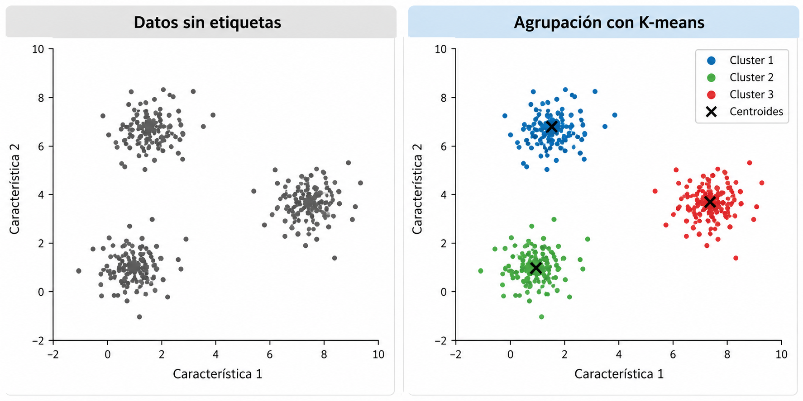
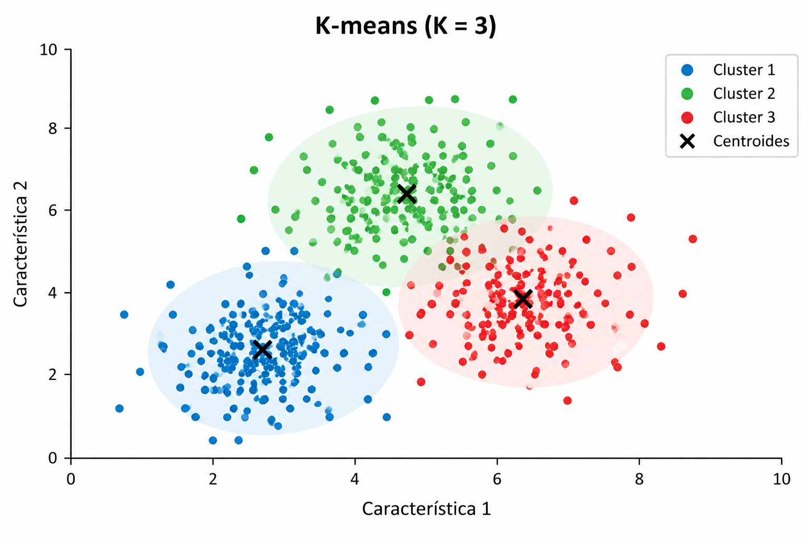
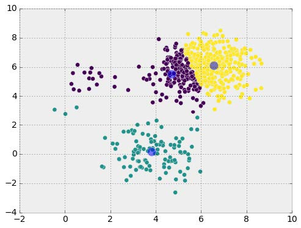
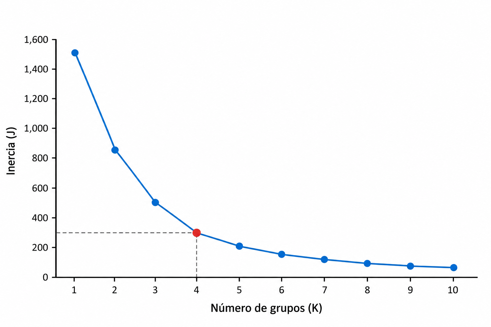
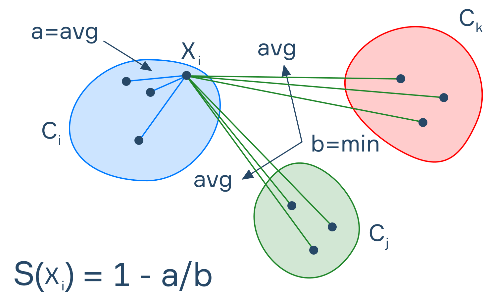
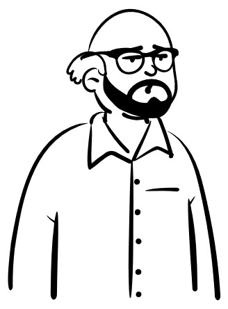

Algoritmo K-means
En el aprendizaje no supervisado, los algoritmos buscan identificar patrones y estructuras en conjuntos de datos que no contienen etiquetas.
Una de las técnicas más utilizadas es el agrupamiento (clustering), cuyo objetivo es identificar observaciones con características similares.

El clustering consiste en dividir un conjunto de observaciones en grupos, llamados clusters, de acuerdo con sus características.
Se busca que:
K-means es un algoritmo de aprendizaje no supervisado que divide un conjunto de datos en \(K\) grupos.
Cada grupo está representado por un punto llamado centroide, que corresponde al promedio de las observaciones asignadas a ese grupo.

El algoritmo busca encontrar grupos cuyas observaciones estén lo más cerca posible de sus respectivos centroides usando usualmente la distancia euclidiana como medida de cercania.
El algoritmo sigue un procedimiento iterativo:
Aplica el algoritmo K-means para agrupar en dos clusters las siguientes observaciones utilizando la distancia euclidiana. Utiliza \[ \mu_1=(1,1),\qquad \mu_2=(6,6) \] como centroides iniciales.
| Observación | \(x_1\) | \(x_2\) |
|---|---|---|
| A | 1 | 1 |
| B | 1 | 2 |
| C | 2 | 1 |
| D | 6 | 6 |
| E | 6 | 7 |
| F | 7 | 6 |
\(K\)-means busca minimizar la suma de las distancias cuadráticas entre las observaciones y sus centroides.
\[ J=\sum_{j=1}^{K}\sum_{x_i\in C_j} \|x_i-\mu_j\|^2, \]
\(J\) se conoce como inercia o suma de cuadrados dentro de los grupos (WCSS, Within-Cluster Sum of Squares).
Se utiliza para medir qué tan compactos son los grupos: cuanto menor sea \(J\), más cerca estarán las observaciones de sus respectivos centroides.
| Hiperparámetro | Descripción |
|---|---|
n_clusters |
Número de grupos (\(K\)) que se desea formar. |
init |
Método utilizado para inicializar los centroides |
max_iter |
Número máximo de iteraciones por ejecución. |
tol |
Tolerancia utilizada para determinar la convergencia. |
random_state |
Semilla para controlar la aleatoriedad y reproducir resultados. |
El número de grupos \(K\) debe establecerse antes de ejecutar el algoritmo.
Una elección inadecuada puede producir:

El método del codo consiste en ejecutar \(K\)-means utilizando diferentes valores de \(K\) y calcular la inercia correspondiente.
A medida que aumenta \(K\), la inercia disminuye o permanece igual.
Se busca un punto donde la reducción comienza a ser menos pronunciada.

Limitación: No todos los conjuntos de datos presentan un codo claramente identificable.
El coeficiente de silueta evalúa qué tan similar es una observación a las de su propio grupo en comparación con las de otros grupos.
\[ s(i)=\frac{b(i)-a(i)}{\max(a(i),b(i))} \]

Distancia promedio dentro del grupo:
\[ a(i)=\frac{1}{|C_i|-1} \sum_{\substack{j\in C_i\\j\neq i}}d(x_i,x_j) \]
Distancia promedio mínima a otro grupo:
\[ b(i)=\min_{C_k\neq C_i} \left\{ \frac{1}{|C_k|} \sum_{j\in C_k}d(x_i,x_j) \right\} \]
Nota: Para grupos con una sola observación, el coeficiente de silueta se define convencionalmente como \(0\).
| Valor | Interpretación |
|---|---|
| Cercano a 1 | Observación bien agrupada. |
| Cercano a 0 | Observación próxima a la frontera entre grupos. |
| Negativo | Observación posiblemente asignada a un grupo inadecuado. |
El promedio de los coeficientes de silueta puede utilizarse para comparar diferentes valores de \(K\).

En el siguiente notebook implementaremos \(K\)-means sobre un conjunto de datos, analizaremos los grupos obtenidos y evaluaremos diferentes valores de \(K\).
Modelado de Datos · UACJ